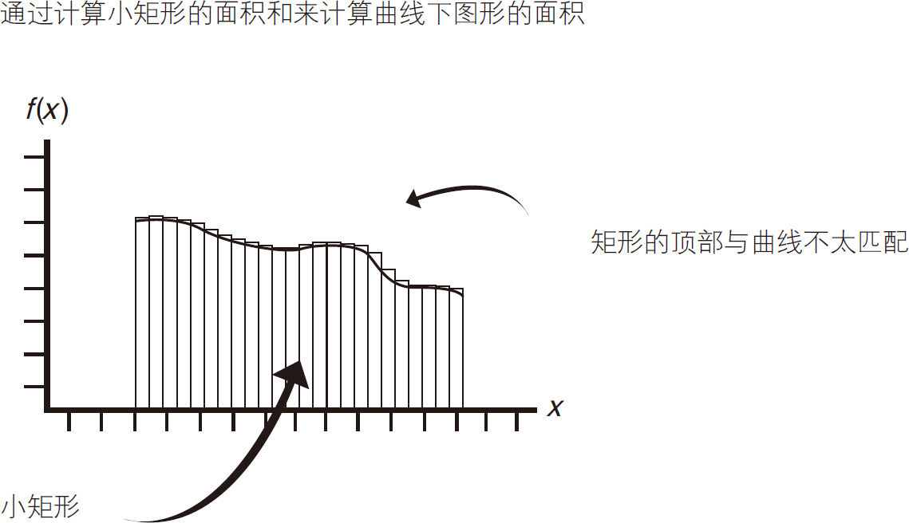
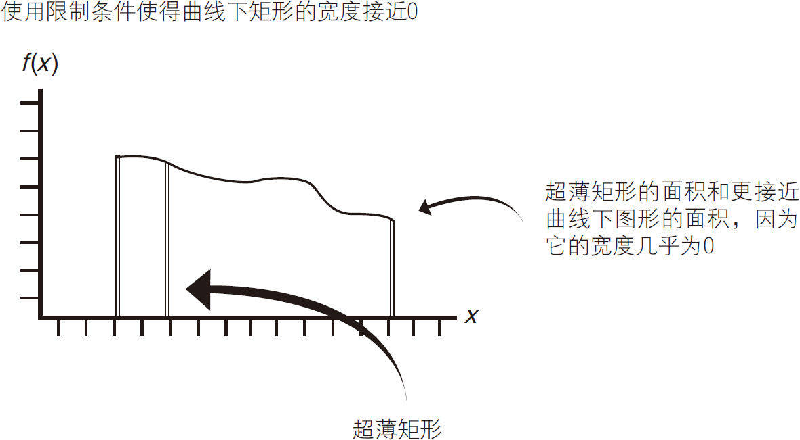
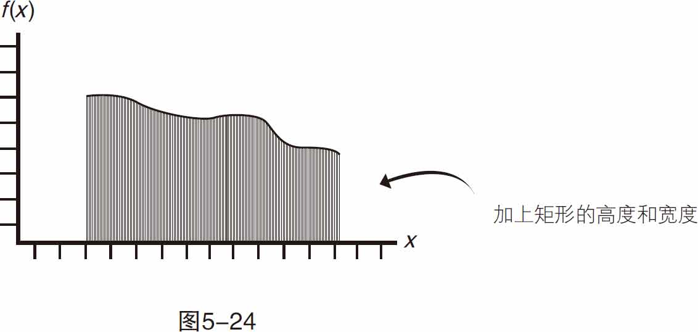
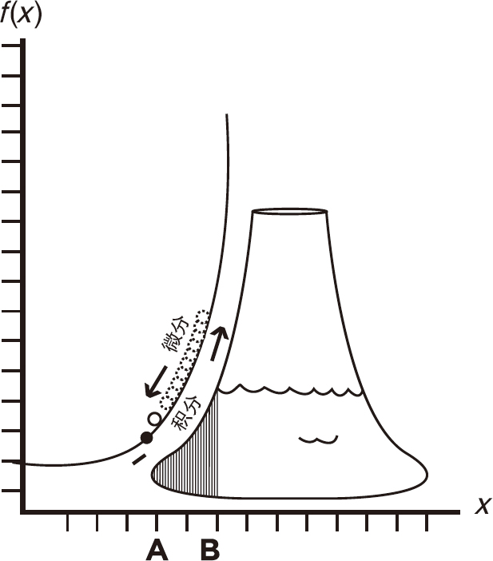

图5-25
用直线几何公式可以求直线或圆围成的平面图形的面积。求曲线图形的面积需要进行积分运算。
为了求曲线下图形的面积，需要计算无限个小矩形的面积和。
以下是方法：
你可以用矩形面积来代替曲线下图形的面积，见图5-22。但这种方法计算出来的结果并不精确。

图5-22
但是，当矩形宽度无限小的时候，近似的结果就很精确了，见图5-23。

图5-23
当你添加或集成矩形的高度和宽度时，你会计算出曲线下面的确切面积，如图5-24所示。
通过添加或集成所有的超薄矩形区域，得到曲线下图形的面积（面积可以表示距离、利润或资源消耗）。

图5-24
图5-25显示了一个定积分公式的例子。积分符号包括一个下限值A 和一个上限值B 。在它旁边，函数用一个变量符号来表示。
图5-25
这里有一个简单的问题，你可以用积分解决。如果你的汽车以每小时60千米的速度行驶，3小时后汽车行驶了多远？
如图5-26所示，我们将从3点开始记录汽车的行程。积分的下限为3（3点），上限为6（6点）。在这个例子中，函数的一个恒定值为60（千米）。

图5-26
对数值进行求和或积分，计算行驶距离。60千米乘以（6-3），这是60千米每小时的速度乘以6小时减去3小时的时间。这辆车匀速行驶了3小时，从出发点开了180千米。
注意：你也可以用简单的算术来得到这个结果，但是这个例子是想告诉你积分公式的定义，以及积分公式中的参数如何设置。这可以帮助你解决更加困难的问题，包括幂变量（指数）的问题。
通过积分，你可以用无穷小的变化量集和来计算总的变化。用微分法，你可以用无限小量代替变化量来计算变化率，如图5-27所示。

图5-27
 积分与微分是相反的（一些积分函数被称为反导函数。）
积分与微分是相反的（一些积分函数被称为反导函数。）